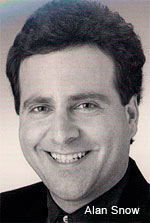
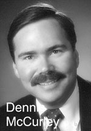

ProteoTech, Inc.
12040 115th Ave., NE
Kirkland, WA 98034
Office: (425) 823-0400
Fax: (425) 823-8508
E-mail: info@proteotech.com
A World Leader in Therapeutics Targeting Misfolded Proteins and Amyloid Diseases
|
Click on a name to see Biography Executive Management Alan D. Snow, PhD (President & CSO) is the Founder and Chairman of the Board. He served as a Research Associate Professor of Pathology at the University of Washington, and is a world-recognized authority on the role of proteoglycans in Alzheimer's and amyloid diseases, with over 20 years of experience in this area of research. At the University of Washington, Dr. Snow was the first to identify and demonstrate specific proteoglycans in amyloid deposits in Alzheimer's disease. Dr. Snow has co-authored several publications with Dr. Stanley Prusiner, a Nobel laureate, and was the first to identify specific proteoglycans in the brain amyloid deposits in a variety of prion diseases. He is the author of more than 50 scientific publications, is an inventor of over 220 patents, and has presented his research on amyloid disease and proteoglycans at over 120 scientific meetings. He holds a BS in Chemistry/Biology from Bowling Green State University in Ohio, a MS in Anatomy from University of Western Ontario (London, Ontario, Canada) and a PhD in Pathology from Queen's University (Kingston, Ontario, Canada). Mr. Stephen Runnels, MBA (CEO) has more than 26 years of international management experience in the healthcare industry. He has held the position of President and CEO of several start-up biopharmaceutical companies, executive vice president and Board member of publicly traded NeoTherapeutics, Inc. (NEOT: NASDAQ) and Vice President of Marketing and Business Development at Sigma-Aldrich, a Fortune 500 company. He has led drug discovery and in vitro diagnostic product development activities in the therapeutic areas of Central Nervous System, Oncology, Clinical Cytogenetics, Assisted Reproductive Technologies, Immunohematology and Diseases of Bone and Cartilage. He is a Senior Industry Advisor for the National Institutes of Health - Capitalization Assistance Program. Mr. Runnels holds a BS in Cell Biology and certification from the American Society of Clinical Pathology as a specialist in Immunohematology and is a PhD candidate in Management.  Dennis L. McCurley, MBA, PhD (COO/CFO) is responsible for the daily operations at ProteoTech. Dr. McCurley has held various senior management positions over the past 30 years including VP-Franchising, VP-Regional Manager with First Interstate Bancorp and CEO of Capital Access One. He earned his MBA from the University of Southern California in finance and holds a PhD in Management and Organizational Behavior. Dr. McCurley has been very involved in the community by serving on several nonprofit boards. Dr. McCurley has been a guest lecturer at the University of Washington in Organizational Behavior and Business Ethics. He was also a founding member of several start-up companies before joining ProteoTech in 1997. Rebecca Eagen, PhD, (Director of Intellectual Property) is responsible for managing the extensive and growing IP portfolio of the Company. Dr. Eagen is a Registered Patent Agent in the US and Canada and has specialized in pharmaceutical and biotechnology patents. She holds a PhD in Molecular Biology and Biochemistry from the University of British Columbia, Vancouver, BC. Scientific Advisory Board
Board of DirectorsAlan D.Snow, PhD - Chairman, President, and Chief Scientific Officer: Dr. Snow is the Founder and Chairman of the Company's Board of Directors. He previously served as a Research Associate Professor of Pathology at the University of Washington, and is a world-recognized authority on the role of proteoglycans in Alzheimer's and amyloid diseases. He holds a BS in Biology/Chemistry from Bowling Green State University in Ohio, an MS in Anatomy from University of Western Ontario (London, Ontario, Canada), and a PhD in Pathology from Queen's University (Kingston, Ontario, Canada). At Queen's University, Dr. Snow worked in the laboratory of Dr. Robert Kisilevsky. Dr. Snow's thesis work led to new discoveries concerning the pathogenic role that proteoglycans and glycosaminoglycans play in amyloid diseases. At the University of Washington, Dr. Snow was the first to identify and demonstrate specific proteoglycans in amyloid deposits in Alzheimer's disease. Dr. Snow has co-authored several publications with Dr. Stanley Prusiner, a Nobel laureate, and was the first to identify specific proteoglycans in the brain amyloid deposits in a variety of prion diseases. Dr. Snow is the author of more than 50 scientific publications and has presented his research on amyloid disease and proteoglycans at over 120 scientific meetings. Dr. Snow is also a co-inventor on over 220 patents, including 165 issued patents (in the US and Internationally). Dr. Snow founded ProteoTech in 1996, then left the University of Washington in 1999 to serve as the Company's Chairman, President, acting CEO and CSO. He was instrumental in personally writing and acquiring over $10 million in grant funding from the NIH SBIR and The Michael J. Fox Foundation for Parkinson's research LEAPS (Linked Efforts to Accelerate Parkinson's Solutions) program. He helped hire corporate and patent lawyers, as well as regulatory and scientific advisors, and recruited world-class research scientists and key management and consultant positions for the Company. He helped negotiate and write/edit business contracts and agreements for various contract research organizations and university collaborations, and guided major drug development programs for ProteoTech in Alzheimer's, Parkinson's, type 2 diabetes and systemic amyloidosis. He helped write and guided patent lawyers and patent agents on more than 220 patents pertaining to new therapeutics and diagnostics platform for amyloid diseases and proteoglycan technologies. Stephen Runnels, MBA - Chief Executive Officer: Mr. Steve Runnels has more than 26 years of successful and proven international business management experience in the healthcare industry. He has held the position of President and CEO of several start-up biopharmaceutical companies, executive vice president and Board member of publicly traded NeoTherapeutics, Inc. (NEOT: NASDAQ) and Vice President of Marketing and Business Development at Sigma-Aldrich, a Fortune 500 company. He has led drug discovery and in vitro diagnostic product development activities in the therapeutic areas of Central Nervous System, Oncology, Clinical Cytogenetics, Assisted Reproductive Technologies, Immunohematology and Diseases of Bone and Cartilage. Mr. Runnels is a Senior Industry Advisor for the National Institutes of Health Commercialization Program (NIH-CAP) managed by the Los Angeles Regional Technology Association (LARTA). He is on the Advisory Board for Extension Courses in Medical Product Development, at the University of California – Irvine and is on the Board of Directors at Biosome, Inc. Mr. Runnels holds a BS in Cell Biology and certification from the American Society of Clinical Pathology as a specialist in Immunohematology. He has an MBA in International Business and is a PhD candidate in Management. Dennis L. McCurley, MBA, PhD – Chief Operating Officer and Chief Financial Officer: Prior to joining ProteoTech, Dr. McCurley has held senior management positions with various companies. Those positions include VP-Franchising, VP-Regional Manager with First Interstate Bancorp, VP-District Manager with Wells Fargo Bank and CEO of Capital Access One. Dr. McCurley has also participated in establishing and growing several innovative companies prior to ProteoTech. No bio at this time |